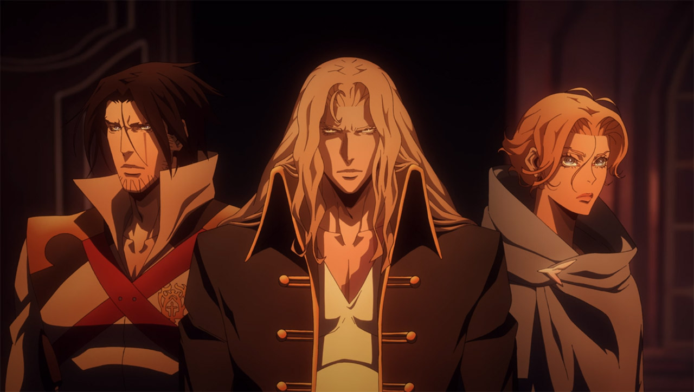
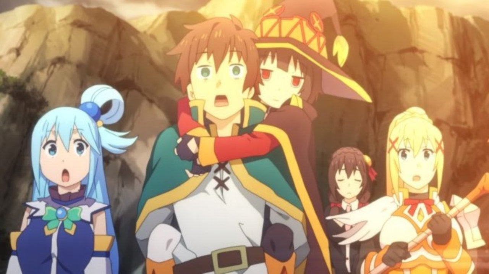

RSS Feed
RSS Feed
Animes, Shows & Movies Reviews 6
09 May 2020Previously: One / Two / Three / Four / Five
Violet Evergarden

I knew this one by name, though I didn't know what it was about. We binged-watched in two sittings with a few friends.
I think the word I dimly recall being associated with Violet Evergarden is "poetry". And I can understand it. It looks georgeous, and it's also sentimental without being overly hokey.
I think the show's perspective is uniquely interesting: we following a character (Violet) that starts of as completely emotionally imature (in the sense of wholly unaware what emotions are, and how they affect her and others) in a journey of emotional discovery.
Very recommended.
My Hero Academia Season 4
Previously: Season 3, Season 1 & 2
My Hero Academia has been one of my favorite anime, and it's still great.
That being said, this season is perhaps the weakest so far (but still strong in absolute terms).
My criticism here is that the arcs are too drawn out, some episodes almost bordering on being fillers. Not reeeeally, but what I mean is this: One of Hero Academia's strength is being relatively earnest, and clear with its message. It's going to tell you what it wants to say. In this season, they did that, but also — or so it felt to me — occasionally beat you over the head with it. I'm notably thinking of a whole episode where the whole point is to affirm how much certain characters care about saving another character, in a way that isn't very interesting. And generally, things could have been condensed more.
Interestingly, this criticism holds both for the first longer, "heavier" arc, and for the second shorter more light-hearted arc.
ID:Invaded

ID: Invaded was a really good surprise of a show. It's part murder-mystery, part Matrix/Inception-style techno-thriller, part revenge flick.
What I appreciated most about the show is how it dealt out information sparingly, keeping you guessing at the nature of things, without ever being confusing, nor relying on information dumps. The pacing is also pretty good.
It's even (at least on one occasion) really touching. And with only 13 episodes, it's damn short. A perfect binge-watching candidate.
Stranger Things, Season 3
I had watched season 1 and season 2 (but not reviewed them on here, I only did anime back then), and enjoyed them a lot.
Season 3 is, mostly, more of the same. The narrative structure is very similar. I maybe felt that it took a bit too long to set things up, to get to the point where our heroes are actually active rather than clueless. But maybe it was like that for previous seasons too and I forgot.
The ending redeems whatever slack the start may have. And what a sucker punch of an ending that is! I'm glad season 4 has been confirmed and some things are hinted at, otherwise I'd have been outraged that the series end on that note.
I was also mildly annoyed at a lot of conflict between character without much stakes or interestingness going on — that's not the wholesomeness I look for in Stranger Things!
Also: good humanization of a certain character towards the end.
Big like on Maya Hawke's new character, Robin. Steve Harrington remains my favorite character. The parts with them, Dustin and Erica are the best of the season in my opinion.
Infinite Dendrogram
Here's another watch-to-pass-time isekai. Honestly, it ended up better than I expected, without never really approaching greatness.
There's something off about the thing. An artificiality that makes you think that this is the thing that someones setting out to write an isekai could come up with. I wish I was articulate enough to point out why the anime doesn't quite work and is hard to take completely at face value. It feels like the trappings of the genre get in the way of telling a good story.
That being said, it's not bad. I finished it and enjoyed the ride for what it was. From the initial reaction I've seen online, I thing this anime will largely be overlooked and under-rated.
For me, this is certainly not worse than Slime, and in many ways, better.
I'll have more to say about this in the review for Samurai Champloo, but if there's at least something good you can say about Infinite Dendrogram is that it takes itself earnestly.
Castlevania (all 3 seasons)

Castlevania, the Netflix-produced American anime, was on the edge of my consciousness for a long time, though I didn't what it was in substance.
With the hype of season 3, I finally gave it a go.
First shock: it's much shorter than one would expect. Season 1 is almost a pilot, only 4 episodes. Season 2 has 8 and season 3 has 10.
Content-wise, I must concede it's pretty good, though I think it fell short of what it could have been.
Without spoiling, there are events in season 2 happening much too soon in my opinion. The shows does play fast and loose with its premise, and I think that's a shame.
In season 3, I thought one of the narrative arcs of the season (following a certain vampire) was completely useless and ex machina. I liked the entailed character development, but there were better, subtler, more believable ways to get there. Fortunately it's also very short in screen time (which is perhaps also one of the reason it fails to work).
All in all, we are presented with a compelling universe, interesting characters, some mysteries to unravel. I wouldn't add it to the hallowed list of the must-watch, but it's a solid recommendation from me.
As a side note, this is an American production, but I watched it with the Japanese dub. I found the English dub rather awkward. I noticed the fact it's a dub (and the lipsync is thus off) a lot, whereas I don't in Japanese (simply due to being unfamiliar with the language).
Samurai Champloo
This is something I started binge watched with friends. I think we saw 7 or 8 episodes. After that I decided not to continue watching it, I had other things that needed doing and I wasn't hyped.
This anime is directed by Shinichiro Watanabe (*), as his next anime after Cowboy Bebop. Excerpting my own review of it:
My impression of Cowboy Bebop is that it's an impressive anime — one with mature themes and a real reflection — which happens to be buried in a heap of goofy filler. [...] Still, if you manage to power through the initial filler (I almost didn't), I don't think you'll regret watching Cowboy Bebop.
(*) Interestingly, Watanabe is also the director of Carole & Tuesday, another thing I dropped though I found it to be quite good.
Having only watched 7 episodes of Samurai Champloo, it's hard to say whether it would be the same or not. The goofy filler is there all right, and in spades. Would the story take a turn for the serious towards the end? I must imagine it would. But I'm not incredibly motivated to continue right now.
One issue with my non-motivation, besides the uncertainty that it gets better, is the characters. They're not bad, but Mugen and Jin lack the aesthetic, almost mystical, charism of Spike Spiegel. "Brave girl" Fuu is less interseting than emotionally-stunted vixen Faye Valentine (though I do expect the rest of the series has character development for her in relation with this sunflower samurai).
I think I'll be back to Samurais Champloo, if only by curiosity. It does feel like I've got better things to watch right now however.
Samurai Champloo is an interesting data point on my own taste. Clearly, I'm not into "goofy" story. In both Cowboy Bebop and this, the characters are somewhat loveable, and somewhat dumb, and can't help but to keep losing. The problem is, I don't find that very funny, and it makes for a poor story. It always circles back to the same spot, nothing is learned, so character development is absent. The stakes never move. Cowboy Bebop has a poignant story (and ending), but it gets condensed in maybe four or five episodes worth of content, in a 26-episodes series (some of those other episodes are genuinely good too though).
But additionally, I think what bothers me greatly is that it makes me feel like the story does not take itself seriously. It's not earnest. It's an unfunny comedy, when what I want out of it is a thriller, an epic or a drama.
I guess I'm a sucker for earnestness on the other hand. It's why I watched the whole of Infinite Dendrogram. Objectively, it's of lesser quality than Samurai Champloo. But story never fails to take itself seriously (something that I think many people will count as a mark against it). But in all honesty, if Samurai Champloo was airing weekly, I probably would have watched it all too.
Mo Dao Zu Shi
This is a popular Chinese anime (a donghua) — honestly, the only dongua I've ever heard about. Plot:
As the grandmaster who founded the Demonic Sect, Wei Wuxian roamed the world in his wanton ways, hated by millions for the crimes he was accused. In the end, he was stabbed in the back by his sworn brother Jiang Cheng and killed by the vicious ghosts he controlled when the cultivation clans attacked his stronghold to kill him. After 13 years, he is summoned into the body of a lunatic called Mo Xuanyu, who was rejected by his clan and bullied by his family, therefore sacrificing his own body to Wei Wuxian so he could avenge him. He'll soon meet a famous cultivator from his past, Lan Wangji.
They will soon face a series of events that will take them to discover the truth behind the tragic events that led to the death of many people and Wei Wuxian himself.
I dropped it after 2 episodes.
From the trailer it looked a stylish Demon Slayer but more earnest and noir. In reality, the first two episodes are mostly comprised of characters bickering. It's 30 minutes for an episode, so that's 1 hours of mostly bickering and some cool combat mixed in... and absolutely no reason to care about the story whatsoever.
Really though. In one hour of play time, the main character gets reincarnated (that takes all of two minutes) then we are not given a single reason to really care about him, or Lan Wangji which is the only other character of consequence introduced. No real mystery is implanted either other than what is delivered as backstory exposition: Wei Wuxian was this warlock master, who apparently did some horrible things. What? Why?
My second huge gripe is this: If Wei Wuxian was this badass warlock king, then why as he is reincarnated in the body of a boy, does he take a definitely un-badass, and in fact boyish personality? I guess that's the only harp on the mystery we get: how did someone with an apparently lame and kind disposition (he does take some pain to save people) do such horrible things?
But yeah. It wasn't enjoyable viewing, and I was given no reason to keep watching, so I dropped it.
I guess the real mystery is why it has a 8.5 rating on MyAnimeList.
I did parse the reviews in search for something that wasn't a 10 or a 9 to find some nuanced explanation but didn't found anything that explains it. The 10 and 9 review mostly praise the aesthetics.
I found this however, which I'll confirm:
On the other hand, the characters are less impressive. One of my biggest pet peeves is same facing. Same facing is when an artist consistently draws the same kind of face and the only way to distinguish them apart is from their hair or clothing. MDZS is very guilty of this. I couldn't tell anyone apart because all the people from the same sect wore the same clothes and everyone has the same face.
Re:Zero Frozen Bonds
Previously: Season 1
A big coronavirus-induced disappointement this season was that Re:Zero season 2 was pushed back. However there is an OVA that came out at the end of 2019. Since I really like Re:Zero, it was a no brainer to watch that.
And ... it kinda sucks. I'm sure real fans will enjoy learning about the tiny sliver of backstory we're given here. But as a story on its own, it's nothing to write home about.
Seriously, the thing just lacks interestingness. The plot is basically (1) people are afraid of Emilia, who is an unreasonably nice person, (2) an ennemy appear, it has to be defeated.
If you want the backstory without wasting your time, go read a summary.
Konosuba!: Legend of Crimson

This is a movie (I had to look it up, but the main distinction seems to be that a movie airs in theaters, while an OVA does not), this time for Konosuba!.
This was very unlike the Re:Zero OVA, and I enjoyed it a lot.
It's a spot on transcription of the show's humor and feeling to a movie. It's also paced like a good movie: it avoids the trap of feeling like a drawn-out episode, or like something that would breathe better as a longer string of episodes.
Frankly, I'd forgotten how much I enjoyed Konosuba!, so this was really a nice surprise.
The franchise really has a unique texture to it. It's quite funny in its own unique way, but — despite the show never being overtly sentimal — it's also warm and fuzzy, when the characters reveal their underlying camaraderie in-between bouts of bickering.
Funnily enough, Konosuba! has a lot of the things I said I disliked in other shows: bickering (Mo Dao Zu Shi), the protagonist being loveable/dumb losers (Samurai Champloo), though crucially, in Konosuba! they do ultimately win and it can be argued they do progress, albeit slowly).
I guess the lesson is that everything can work under the right frame, and that describing aesthetics and "texture" is hard.
I realize I haven't said much about the movie itself, but really it's Konosuba!. If you enjoy the show, you'll enjoy the movie just as much. Very recommended.
Promare

As a fan of Kill la Kill and Gurren Lagann, I was naturally excited to see a new movie featuring the same director and head writer (Hiroyuki Imaishi & Kazuki Nakashima), especially since Promare is blatantly a riff on the same genre. Heck, the main character (Galo) even looks like Gurren Lagann's Kamina.
In fact, the ressemblance is so deep, it sometimes feels like an hommage. Battles fuelled by fighting spirit, huge mechas that change, battle that escalate to planetary scale, etc.
While ostensibly the movie is somewhat closer to Gurren Lagann, it found it actually closer to Kill la Kill in terms of direction.
It's constant action that almost never lets up, ultra-fast pacing with no useless downtime. This is a lot like Kill la Kill. Gurren Lagann is a story that breathes more. Characters have more complex emotions that are given screen time to be explored more in depth. Relationships are subtler.
But all this would be complex to render in a movie, and still make a good action flick. I reviewed the first Gurren Lagann movie, which is an attempt to condense the TV show to two movies. My conclusion was that it was an abject failure — you're rushed through emotional developments in a way that is simply not satisfying or meaningful enough.
But Promare is free of these shackles, and I found it to be extremely satisfying. It works as a movie version of the genre (in this it is a bit like the Konosuba! OVA). This is not to say that the characters don't have emotions, but they are less complex and fraught, and can be satisfyingly handled in a bit less than two hours.
The movie is not totally a re-thread. In particular, it has its own distinctive visual style, that revolves around geometric shapes. Cubes feature prominently, for instance ice-cube shooting guns. There are a lot of triangles as well, for a distinctive low-polygon aesthetic on some effects (e.g. lightning). There is also a very tasteful use of pastel colors that I personally found delightful.
Still, it is mostly a re-thread. If there is one bad thing to be said about Promare, it's that it avoids the risk of proposing something new, which would really have made it stand out.
If you've liked Gurren Lagann or Kill la Kill, go watch Promare. If you don't know about either, go watch one of those things and figure out if it's your style.
Lucky Star
Lucky Star was another anime we were slated to binge, but I couldn't be there on the first day. I tried to catch up on my own, but two episodes in, it was clear it wasn't for me.
I think the first episode must be the most boring piece of anime I've seen in a very long time.
They just talk, about whatever ("how to eat a chocolate scone" is at topic that takes up a big chunk of the time in that first episode).
The second episode is a bit better, at least you get the passage of time for the semblance of plot (it's holiday and they have to do homework, and then it's school).
Slice of life is not my big thing, but I can get into it. I liked K-On! a lot. But here it's hard. There's little sense of direction, absolutely no stakes or tension. It's not particularly funny (though I get how it could get one to smile). I don't begrudge the art style, but it's not particularly pretty, and it's obviously low-budget. I'm not very observant of these things, but it struck even me that there were no animated/detailed backgrounds in many scenes. Not that I matters much, but the animation is not the show redeeming's quality.
At the same time, I kinda get it. In a way totally, utterly different from Samurai Champloo, I get how people can like this. There's something about the humor / aesthetic that's kinda nice? If only they could manage to interest me at all.
Westworld Season 3

(Note: I won't spoil the events of the season below, but I will give some meta-spoiler that will let you know what twists to expect or not. If you don't want that, now is the time to exit.)
Since I've not reviewed the first two seaons, let's recap first.
I think Westworld season 1 is the best thing that's ever been on TV. Ever. I think it's superior to most movies and TV shows. Maybe something like The Lord of The Rings, The Dark Knight, or the first season of The Wire comes really close.
It's a delightful story, there are (many) delightful mysteries that you can't help but get caught thinking about. The story is compelling, the acting is on point, the dialogue is incredible. It's one of the only things I've rewatched in recent years, and it was still supremely enjoyable on second viewing, even knowing all the twists.
So yeah. Season 2 though? Not so good. It has the twists and mysteries, but sometimes they feel a bit gratuitous, like they thought "Westworld is narrative twists" and contorted the story to add them. Some of the main characters' arcs are uninteresting, or downright bad (coughs Shogun World).
It's still pretty good though, but a far cry from season 1. Just your "normal better-than-average TV".
One sublime hit, one miss. Season 3 is the time of reckoning. Was season 2 a fluke?
Sadly it wasn't. The more I think about season 3, the less I like it.
It starts strong though, I'd say I was pretty excited until the middle, then I progressively started feeling, with increased certainty with each passing episode, that the conclusion would be sub-par.
The premise is interesting. Aaron Paul's character is very intriguing. All these new elements appear and you're like "hoo, mysteries, twists". Well except there is no real twist. Well there is a "twist" towards the middle of the season, but no narrative-reframing timeline-magic everything-falls-into-place twist like in the first two seasons. Yet there were signs... inconsistencies, small details in a show that is known for its attention to details. I've seen people on the subreddit complain: have they become sloppy, or are they just messing with us?
I enjoyed where it could have gone, but at the end of the season, there is no part of it that I liked in its entirety. One of the main character arc is completely useless, serving only to remind us that the character exists. Mostly a waste of good screen time. One of the other main character's motivation are dumb and tired, a re-thread from previous seasons, and should have been put to rest.
And yet another of the main characters has big plans. But obviously the showrunners have trouble writing a good (or even, clear) plan for a character with unlimited resources.
The mastermind played by Vincent Cassel was completely milquetoast compared to Anthony Hopkins' Ford in the first season. The only thing interesting about him was his biography, but nothing he says is particularly fascinating, the way Ford's monologues are.
Besides twists and narratives, the big victim of the season is dialogue. There's too little of it, and it's not good enough. Season 1 had all these philosophical motifs that it would call often echo in dialogue, even if it wasn't a deep philosophical conversation (of which there were some too). Instead we get a lot of action. Westworld is not so great with action. It's not incompetent, but it's not impressive, and it's often dumb in season 2 and 3 (a lot of shooting and not a whole lot of hitting, some pretty heavy plot armors).
All around, it felt like a dumbing down of the show. I wonder if this was voluntary or not. Season 2 did worse than season 1. As it turns out, season 3 did significantly worse than season 2 (but as it is, it's still HBO's most popular show this year).
Let's end on a positive note though, the show looks really good. The locations (often in Singapore) are excellent, and the work on the environment (lighting, etc) is really nice. Some of the shots (in particular those that frame the characters agains the background locations) are very nice.
It also sounds pretty damn nice. I especially like the choice of insert songs, from "Common People" to "Brain Damage". On the more cinematic side, Ramin Djawadi is still rocking.
Though it ain't great, it's also not that bad. I'm invested enough that I'll probably watch the next season.